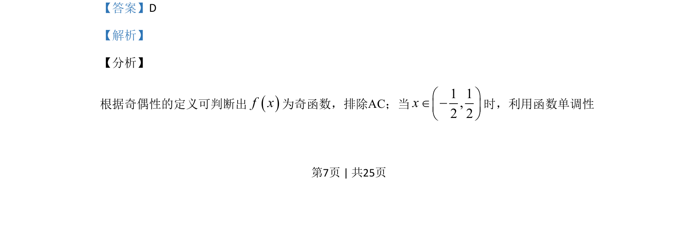

考点：奇偶性 单调性 函数图像
通过分析函数奇偶性和不同区间的单调性，判断对应函数图像。

📄 原 PDF 第 7 页：
素材/真题/吉林/2008-2024·（吉林）数学高考真题/2020年高考数学试卷（理）（新课标Ⅱ）（解析卷）.pdf
9.设函数( ) ln | 2 1| ln | 2 1|f x x x= + - -，则f(x)（ ） A. 是偶函数，且在1( , )2+¥单调递增 B. 是奇函数，且在1 1( , )2 2-单调递减 C. 是偶函数，且在1( , )2-¥ -单调递增 D. 是奇函数，且在1( , )2-¥ -单调递减
【答案】D 【解析】 【分析】 根据奇偶性的定义可判断出f x为奇函数，排除AC；当1 1,2 2xæ öÎ -ç ÷è ø 时，利用函数单调性